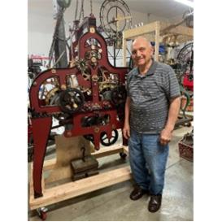
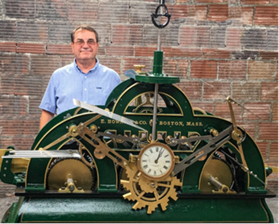

<!DOCTYPE html>
<html style="padding: 0px; margin: 0px;" class="user_font_size_normal user_font_system"><head>
<meta http-equiv="content-type" content="text/html; charset=UTF-8"><style type="text/css">.MsgHeaderTable .Object{cursor:pointer;color:darkblue;text-decoration:none;cursor:pointer;white-space:nowrap;}
.MsgHeaderTable .Object-hover{cursor:pointer;color:darkblue;text-decoration:underline;white-space:nowrap;}
.MsgBody{background-color:#fdfdfd;-moz-user-select:element;-ms-user-select:element;}
.MsgBody-text{color:#333;font-family:monospace;word-wrap:break-word;}
.MsgBody-text,.MsgBody-html{padding:10px;}
div.MsgBody,div.MsgBody *{font-size:1.18rem;}
body.MsgBody{font-size:1.18rem;}
.MsgBody .SignatureText{color:gray;}
.MsgBody .QuotedText0{color:purple;}
.MsgBody .QuotedText1{color:green;}
.MsgBody .QuotedText2{color:red;}
.user_font_modern{font-family:"Helvetica Neue",Helvetica,Arial,"Liberation Sans",sans-serif;}
.user_font_classic{font-family:Tahoma,Arial,sans-serif;}
.user_font_wide{font-family:Verdana,sans-serif;}
.user_font_system{font-family:"Segoe UI","Lucida Sans",sans-serif;}
.user_font_size_small{font-size:11px;}
.user_font_size_normal{font-size:12px;}
.user_font_size_large{font-size:14px;}
.user_font_size_larger{font-size:16px;}
.MsgBody .Object{color:darkblue;text-decoration:none;cursor:pointer;}
.MsgBody .Object-hover{color:darkblue;text-decoration:underline;}
.MsgBody .Object-active{color:darkgreen;text-decoration:underline;}
.MsgBody .FakeAnchor,.MsgBody a:link,.MsgBody a:visited{color:darkblue;text-decoration:none;cursor:pointer;}
.MsgBody a:hover{color:darkblue;text-decoration:underline;}
.MsgBody a:active{color:darkgreen;text-decoration:underline;}
.MsgBody .POObject{color:blue;}
.MsgBody .POObjectApproved{color:green;}
.MsgBody .POObjectRejected{color:red;}
.MsgBody .zimbraHide{display:none;}
.MsgBody-html pre,.MsgBody-html pre *{white-space:pre-wrap;word-wrap:break-word!important;}
.MsgBody-html tt,.MsgBody-html tt *{font-family:monospace;white-space:pre-wrap;word-wrap:break-word!important;}
.MsgBody .ZmSearchResult{background-color:#FFFEC4;}</style></head><body style="overflow-wrap: break-word; margin: 0px; height: auto; width: 1025px; position: absolute;" class="MsgBody MsgBody-html" lang="DE"><div><div><style><!--
/* Font Definitions */
@font-face
	{font-family:"Cambria Math";
	panose-1:2 4 5 3 5 4 6 3 2 4;}
@font-face
	{font-family:Calibri;
	panose-1:2 15 5 2 2 2 4 3 2 4;}
/* Style Definitions */
p.MsoNormal, li.MsoNormal, div.MsoNormal
	{margin:0cm;
	font-size:11.0pt;
	font-family:"Calibri",sans-serif;
	mso-fareast-language:EN-US;}
a:link, span.MsoHyperlink
	{mso-style-priority:99;
	color:#0563C1;
	text-decoration:underline;}
span.E-MailFormatvorlage18
	{mso-style-type:personal-compose;
	font-family:"Calibri",sans-serif;
	color:windowtext;}
.MsoChpDefault
	{mso-style-type:export-only;
	font-size:10.0pt;
	font-family:"Calibri",sans-serif;
	mso-fareast-language:EN-US;}
@page WordSection1
	{size:612.0pt 792.0pt;
	margin:70.85pt 70.85pt 2.0cm 70.85pt;}
div.WordSection1
	{page:WordSection1;}
-->	</style>

<pre>
From: <borck.breuberg@t-online.de>
Subject: Turmuhren- und Glockennachrichten September 2022
Date: Wed, 31 Aug 2022 10:27:37 +0200
</pre>
<a href="20220831borck/nachrichten-september2022.zip">attached files</a>

	<div class="WordSection1"><p class="MsoNormal">Liebe Turmuhrenfreunde, Glockenfreunde und Freunde der öffentlichen Zeitanzeige</p><p class="MsoNormal">&nbsp;</p><p class="MsoNormal">&gt;Zunächst <b>Korrekturen zur August Mail</b>: ich habe mich beim <b>Verkauf der Korfhage Uhren</b> leider mehrfach vertan: falsch: „Ebenfalls stehen noch Turmuhren bei Firma <i>Vortmann</i> zum Verkauf – richtig: bei Firma Korfhage. In der Beschreibung der <b>Nr.35</b> ebenfalls falsch: „Sie ist die erste Uhr mit konstanter Kraft von <i>Vortmann</i> ; richtig „…von Korfhage“. Und: es war „nur“ die <b>erste Korfhage (!) mit konstanter Kraft</b>….und: die Uhr wurde für eine Weltausstellung gebaut (!). <i>Uff, 01:25 war wohl doch zu spät geworden an dem Morgen; sorry</i>. <span class="Object" role="link" id="OBJ_PREFIX_DWT136_com_zimbra_date">Hier</span> nochmal der <b><span class="Object" role="link" id="OBJ_PREFIX_DWT137_com_zimbra_url"><a href="https://magentacloud.de/s/tBM2n86AD6CDe3k" target="_blank" rel="nofollow noopener noreferrer">Link zu den Uhren, Glocken und Zubehör im Verkauf</a></span></b>.
 Die Nummern sind die Nummern der zu verkaufenden Uhren (nicht nur 
Korfhage!) oder Teile. Ihr dürft den Link gerne in euren Vereinen und 
Uhrenkreisen weiterverbreiten; Danke. Kontakt: Eduard Korfhage, Tel. 
0163-5452111 </p><p class="MsoNormal">&nbsp;</p><p class="MsoNormal">&gt;aus meiner Tour <i>nach dem Lüneburg Symposium</i>: in <span class="Object" role="link" id="OBJ_PREFIX_DWT138_com_zimbra_url"><a href="https://www.moebelgoertz.de/de/Wanduhren/" target="_blank" rel="nofollow noopener noreferrer">Wismar ist eine Schreinerei</a></span>, die neben Möbeln auch <b>Wanduhren</b> 
herstellt (na ja, die Zifferblätter „nur“) – und zwar auch große mit 500
 mm Durchmesser. Die Geschäftsräume rochen wunderbar nach Holz und man 
hatte Einblick in die Werkhalle. Ein Nachbau solcher Uhren ist für 
einige im Verteiler ein Leichtes, jedoch bitte entweder an die langen 
Zeigerwellen denken – oder das Uhrwerk versenken, wenn das Holz dick 
genug ist. Beim Pendelwerk würde ich den Pendelstab aus Balsaholz und 
die Pendellinse aus schwerem Pock-Holz oder dergleichen machen; wenn 
schon, denn schon.</p><p class="MsoNormal">&nbsp;</p><p class="MsoNormal">&gt;Peter brachte vom Urlaub ein <b>Turm-Rätsel aus Breisach</b> 
mit – Danke dir / und Bild anbei – um was kann es sich handeln? Nun, es 
soll mit seinem Tretrad (im hinteren Bereich der Skulptur) an die 
Trinkwasserförderung erinnern – aus einem über 40 Meter tiefen Schacht 
unter diesem Stadtturm. Der Link auf die „<span class="Object" role="link" id="OBJ_PREFIX_DWT139_com_zimbra_url"><a href="https://www.alemannische-seiten.de/deutschland/breisach_radbrunnenturm.php" target="_blank" rel="nofollow noopener noreferrer">Allemanische Seiten</a></span>“ verdeutlicht, dass es sich durchaus lohnt, auch mal HINTER einen Turm zu sehen. Denn Peter’s Foto und die <span class="Object" role="link" id="OBJ_PREFIX_DWT140_com_zimbra_url"><a href="https://stadt.breisach.de/de/kultur/sehenswuerdigkeiten/radbrunnen_turm" target="_blank" rel="nofollow noopener noreferrer">Sehenwürdigkeiten Seite</a></span> Breisach zeigen warum. Auch wenn mal keine öffentliche Zeitanzeige installiert ist.</p><p class="MsoNormal">&nbsp;</p><p class="MsoNormal">&gt;Unsere Turmuhrenfreunde in England besichtigten die große Uhr in der St.<b>Pauls Kathedrale in London</b>. Sie ist erst 1893 von der Konkurrenz <b>John Smith &amp; Sons</b> 
gebaut, aber sicherlich ebenso imposant wie die „Great Clock“ von Dent 
im Elizabeth Tower des Parlaments – und, mit der gleichen Denison 
Hemmung ausgestattet. <span class="Object" role="link" id="OBJ_PREFIX_DWT141_com_zimbra_date">Hier</span> geht es zum <span class="Object" role="link" id="OBJ_PREFIX_DWT142_com_zimbra_url"><a href="https://vimeo.com/636271488/3c96c67450" target="_blank" rel="nofollow noopener noreferrer">Film über den Besuch</a></span> –
 DANKE an die TCG turret clock group der AHS, namentlich Andy Burdon *, 
dass ich das den Nicht-Mitgliedern zeigen darf. Etwas mehr Info, z.B. 
die Elektrifizierung 1969 auf der <span class="Object" role="link" id="OBJ_PREFIX_DWT143_com_zimbra_url"><a href="https://commons.wikimedia.org/wiki/Category:St._Paul%E2%80%99s_Cathedral_Clock" target="_blank" rel="nofollow noopener noreferrer">Wikimedia Seite</a></span> . Wer tiefer in die Geschichte eintauchen möchte, kann auf der <span class="Object" role="link" id="OBJ_PREFIX_DWT144_com_zimbra_url"><a href="https://suzassippi.wordpress.com/2020/08/01/the-great-clock-at-st-pauls-cathedral/" target="_blank" rel="nofollow noopener noreferrer">Coutry Cronicles Seite</a></span> lesen bzw. den dort vorhandenen Links nachgehen, um z.B. die Vorgänger Uhr von Bradley 1708 zu erfahren. <span class="Object" role="link" id="OBJ_PREFIX_DWT145_com_zimbra_url"><a href="https://www.cosmicelk.net/StPaulsCathedralclocks.htm" target="_blank" rel="nofollow noopener noreferrer">Einer der Links</a></span> bringt auch exzellente Details über bautechnische Besonderheiten wie die Treppe des Süd-Turms vom Beginn des Films, ein <i>helikales geometrisches Treppenhaus</i> 
mit freitragenden (!) Stufen. Ein gutes Beispiel für die hohe Zähnezahl 
an Zeigergetrieben englischer Groß-Turmuhren zeigt die entsprechende <span class="Object" role="link" id="OBJ_PREFIX_DWT146_com_zimbra_url"><a href="https://www.smithofderby.com/projects/st-pauls-cathedral-clock/" target="_blank" rel="nofollow noopener noreferrer">Webseite von Smith of Derby</a></span> –
 und gleich noch eine Eigenart der englischen Turmuhren: Integration des
 Zeigergetriebes im Uhrwerk, Ausgang manchmal durch das 
Kontrollzifferblatt geführt. Auf dieser Seite wird angeführt, dass die 
Uhr eine Rahmenlänge von 5,8 Meter besitzt! * Bei der Gelegenheit: unser
 Turmuhrenfreund Andy Burdon findet sich im <span class="Object" role="link" id="OBJ_PREFIX_DWT147_com_zimbra_url"><a href="https://www.smithofderby.com/home/our-team/" target="_blank" rel="nofollow noopener noreferrer">Direktoren Team</a></span>!
 Bevor der Film startet, ist oben links „The Time Workshop“ zu lesen – 
ein klick drauf führt zu Andy’s Vimeo Account, ein Klick dort auf das 
Verkettungssymbol oder den Namen „The Time Workshop“ auf seine WEBseite.</p><p class="MsoNormal">&nbsp;</p><p class="MsoNormal">&gt;Die oben angeführte Uhr nicht verwechseln mit der kleinen Uhr in <b>St Paul's Deptford</b> von der es einen kleinen Film in <span class="Object" role="link" id="OBJ_PREFIX_DWT148_com_zimbra_url"><a href="https://www.youtube.com/watch?v=hN1ZvJEBvsM&amp;ab_channel=deptfordboysSE8" target="_blank" rel="nofollow noopener noreferrer">YouTube</a></span> gibt. Das Auffallende ist der <b>nach oben verlegte elektrische Aufzug</b>,
 den ich mit dem Aufzug der Rathaus Uhr in Groß-Heubach vergleiche, bei 
der die Holzöder Turmuhr ihren Antrieb ebenfalls von oben erhält. Siehe 
erstes Bild auf <span class="Object" role="link" id="OBJ_PREFIX_DWT149_com_zimbra_url"><a href="https://www.turmuhrenfreunde.de/" target="_blank" rel="nofollow noopener noreferrer">https://www.turmuhrenfreunde.de/</a></span>&nbsp;&nbsp; 
dort noch mit Standard-Gewichten. Auch Richard Liebing baute das 
Turmuhrwerk in Hardegg (Österreich) mit einem solchen obenliegendem 
Antrieb; siehe Michael Neureiters <span class="Object" role="link" id="OBJ_PREFIX_DWT150_com_zimbra_url"><a href="https://www.dropbox.com/sh/qho77o4dhetltdf/AAATpfn-d34tSv0Iz6nIzO0Xa/Hardegg?dl=0&amp;subfolder_nav_tracking=1" target="_blank" rel="nofollow noopener noreferrer">Dropbox Eintrag darüber</a></span>.</p><p class="MsoNormal">&nbsp;</p><p class="MsoNormal">&gt;In 2005 kehrte die „<b>Baby Big Ben“ Uhr in Cardiff</b> (Wales) nach 25 Jahren bei einem amerikanischen Sammler zurück in die Stadt. Darüber gibt es bei den BBC News einen <span class="Object" role="link" id="OBJ_PREFIX_DWT151_com_zimbra_url"><a href="http://news.bbc.co.uk/1/hi/wales/south_east/4718903.stm" target="_blank" rel="nofollow noopener noreferrer">Bericht mit Bildern</a></span> 
und der Schilderung, wie die Uhr vom Sammler wieder nach Cardiff 
zurückgegeben wurde – mit der Maßgabe, sie öffentlich zu zeigen. „Baby“ 
schon allein durch das Gewicht zu erkennen, denn 1000lbs sind grade mal 
454kg – noch nicht mal 1/10tel der „Great Clock“ in London.</p><p class="MsoNormal">&nbsp;</p><p class="MsoNormal">&gt;nochmal England: die Firma, die die Restaurierung der „<b>Great Clock</b>“ im Elizabeth Tower ausführte, schrieb mir die Woche „<i>Es war eine Herausforderung, und jetzt werden zum ersten Mal seit Menschengedenken die Viertel und der (Stunden-)Schlag <b>wie ursprünglich geplant aufgezogen</b></i>“.
 Letzten Donnerstag waren sie wieder in London vor Ort, um sich um den 
Aufzug des Gangwerkes zu kümmern. Sollte der evtl. nun auch auf 
elektrisch/automatisch umgestellt werden? Ich versuche es zu ermitteln.</p><p class="MsoNormal">&nbsp;</p><p class="MsoNormal">&gt;Für Glockeninteressierte veranstaltet Herr Wamsiedler ein <b>Glockenseminar</b>&nbsp; <span class="Object" role="link" id="OBJ_PREFIX_DWT152_com_zimbra_url"><a href="https://www.wamsiedler.de/praktisches-glockenseminar-am-10-september-2022-in-braunschweig/" target="_blank" rel="nofollow noopener noreferrer">https://www.wamsiedler.de/praktisches-glockenseminar-am-10-september-2022-in-braunschweig/</a></span> </p><p class="MsoNormal">&gt;ein trauriges Jubiläum: seit 5 Jahren ist die seinerzeit älteste Glockengießerei der Welt geschlossen, <b>Whitechapel in London</b>,
 die z.B. „Big Ben“ gegossen haben – die Stundenglocke der „Great Clock“
 im Elizabeth Tower. Gut, die Anwohner haben mehr Ruhe, bessere Luft, 
aber die Geschichte ist dahin. Kunst hat Einzug gehalten. Auf dem <span class="Object" role="link" id="OBJ_PREFIX_DWT153_com_zimbra_url"><a href="https://maricopa1.wordpress.com/2013/08/19/john-taylor-co-die-groste-glockengieserei-der-welt-in-loughborough-leicestershire/" target="_blank" rel="nofollow noopener noreferrer">Blog eines England Liebhabers</a></span> liest man, dass die <b>Konkurrenz in Loughborough, John Taylor &amp; Co</b>. die angeblich größte der Welt sein soll. Für die hat er einen schönen Link zu einem <span class="Object" role="link" id="OBJ_PREFIX_DWT154_com_zimbra_url"><a href="https://www.youtube.com/watch?v=5djmjn6n1JU&amp;ab_channel=DavidSecker" target="_blank" rel="nofollow noopener noreferrer">Youtube Video</a></span>. </p><p class="MsoNormal">&gt;dass die Engländer gerne ihren <b>Glocken Namen</b> geben, kann man auf der Webseite der o.g. Gießerei sehen: <span class="Object" role="link" id="OBJ_PREFIX_DWT155_com_zimbra_url"><a href="https://taylorbells.co.uk/for-the-enthusiast/" target="_blank" rel="nofollow noopener noreferrer">https://taylorbells.co.uk/for-the-enthusiast/</a></span>&nbsp; </p><p class="MsoNormal">&gt;Die
 Glockennachrichten am 1.August (220801) beschäftigen sich überwiegend 
mit dem Läuten des Stephans Domes in Wien als Erinnerung an die tote 
Ärztin (Suizid wegen Mobbing) und das <b>Glockenläuten in Österreich gegen den weltweiten Hunger</b>.
 Aber auch Glockenabschied von entweihter Kirche und die Möglichkeit 
sowohl händisch (!)als auch elektrisch die Glocken zu läuten, wird 
beschrieben.</p><p class="MsoNormal">&gt;Die Glockennachrichten des 8.August (220808) greifen nochmal den Stephans Dom mit einem beeindruckenden <b>Kampf gegen den Hass <span class="Object" role="link" id="OBJ_PREFIX_DWT156_com_zimbra_url"><a href="https://www.domradio.de/artikel/wiener-dompfarrer-ueber-den-kampf-gegen-hass-im-netz2" target="_blank" rel="nofollow noopener noreferrer">Artikel im „Domradio“</a></span></b> 
auf, beschäftigen sich aber überwiegend mit dem s.g. 
„Glocken-Terrorist“, Pfarrer Wechselberger von der Wallfahrtskirche, die
 angeblich nach der Sanierung wesentlich länger und öfter die Glocken 
läuten lässt. Während in der Pfarrkirche Zweinitz die Mesnerin bei 
drohendem Gewitter läuten lässt – „das ist ja wie früher“, könnte man 
sagen. Und auch <span class="Object" role="link" id="OBJ_PREFIX_DWT157_com_zimbra_date">hier</span> – Marktkirche Greven – wird beschrieben, wie Glocken aus einer profanierten Kirche geholt werden. Last not least wird zum <b>Stadtjubiläum in Freiburg am 16.9.22 die Hosanna geläutet</b> – bekannteste Glocke des Münster Geläutes. In Zürich läuten die Glocken zum Gedenken an das Ende des 2ten Weltkrieges. </p><p class="MsoNormal">&gt;In der folgenden Woche, 220815, findet ein Glockenexperte die <b>älteste Glocke Baden-Württembergs</b> 
(DOM Radio), und durch einen SWR aktuell Beitrag kann man sie sogar 
hören und sehen. Die Ruhr Nachrichten berichten über einen Ökonomischen 
Gottesdienst vor dem ersten Heimspiel von Schalke 04. Die Mitteldeutsche
 Zeitung berichtet über den <b>Anhub</b> (kein Schreibfehler) <b>eines gesamten Glockenstuhls</b> in Bitterfeld!. Der Münchner Merkur zeigt einige Leserbriefe <b>für und wider Glockenläuten</b> 
als auch Ausdruck bayrischer Tradition. Die Sächsische Zeitung schreibt 
über Probleme der Leisniger Stadtkirche und einen Kirchenvorstand, der 
sich dessen annimmt. Und letztlich ist der <b>Blitzeinschlag in der Biberacher Kirche</b> größer als gedacht.</p><p class="MsoNormal">&gt;Woche 220822 Themen: in Trebnitz will Bischof Gebhard Fürst <b>von den Nazis geraubte Glocken</b> zurückgeben – sie sollen zu Friedensglocken werden. Der Geschichts- und Heimatverein Mainhausen hat das <b>Schicksal einer der Glocken geklärt</b>. Michael Patrick Kelly will eine <b>weitere Friedensglocke</b> gießen – diesmal aus Schrott vom Ukraine Krieg. Nach über 2 Jahren Stille ertönen die <b>Glocken am Wolfsburger Rathaus</b> 
wieder. An "Mariä Himmelfahrt" durften Kinder und Erwachsene im Rahmen 
des Ferienprogrammes gemeinsam mit Pfarrer Bernhard Stahlberger den 
Kirchturm in Görwihl besteigen und den <b>Vollklang zum Gloria in der Osternacht</b> im August erleben. Bürgermeister Christoph Fleischhauer in Moers hat die <b>Religionsgemeinschaften</b> in der Stadt gebeten am 2. September um 17 Uhr die <b>Kirchenglocken zu läuten und den Muezzin rufen zu lassen</b>. Die reformierte Kirche Dietikon hat die <b>Abschaffung des Morgenläutens wieder rückgängig gemacht</b> und um 7:00 morgens beginnt es wieder. In der <b>Aarauer</b> Altstadt fand das <b>Obertorturmkonzert</b> mit Glocken, Trompeten und Gesang statt. Die <b>87 jährige Rosi Geyer</b> aus Friedberg hat noch einmal den <b>Glockenturm der Friedberger Stadtkirche</b> mit seinen 124 Stufen bestiegen – wo sie ehemals die Glocken per Hand läutete.</p><p class="MsoNormal">&gt;In
 den Glocken-Nachrichten der letzten August-Woche, 220829, berichten die
 „Nieder-Lausitz Nachrichten“ (und mehrere andere) über <b>die St.Nicolei Kirche in Cottbus und die anstehenden umfangreichen Arbeiten</b>:
 das komplette Geläut muss ausgebaut werden, zwei alte Glocken aus dem 
Jahr 1671 werden restauriert, zwei neue hinausgegossen und eine Glocke 
wird komplett stillgelegt. Zudem soll auch ein vollständig neuer 
(Zweistöckiger!) Glockenstuhl aufgebaut werden! Der „Volksfreund“ ist 
keiner, denn er zeigt uns nur <b>Glocken aus Enkirch beim Verladen</b>, lässt uns aber nicht lesen… Der Deutschlandfunk und auch Radio Prag International berichten, <b>warum die von Grassmayr gegossene Glocke für Prag genau 9.801 Kilogramm wiegt. </b>Das Wieder-Einschalten des <b>Morgen-Geläuts in Dietikon</b> wird nochmals behandelt. <b>In Aue im Erzgebirge hat es auch in die Läuteanlage eingeschlagen</b> 
und die „Freie Presse“ berichtet, dass die Glocken wieder läuten. In der
 Vier-Tore-Stadt Neubrandenburg schreibt der „Strelizius blog“, dass <b>die Glocken der Marienkirche für den Umweltschutz läuten</b>; dazu werden die Glocken 11:50 angemacht, um dann <b>5 Min. vor 12</b> Uhr zu verstummen.</p><p class="MsoNormal">&gt;<b>Alle Glocken-Nachrichten anbei in den Glockenmails</b></p><p class="MsoNormal"><b>&gt;Mitteilung aus Gescher</b><i>: Seit wenigen Tagen ist das Deutsche Glockenmuseum auf der Social-Media-Plattform Twitter vertreten. <span class="Object" role="link" id="OBJ_PREFIX_DWT158_com_zimbra_date">Hier</span>
 berichten wir über Neuigkeiten aus dem Deutschen Glockenmuseum und der 
Welt der Glocken, über unsere Publikationen und natürlich über unsere 
Veranstaltungen. Ziel ist die Steigerung des Bekanntheitsgrades durch 
weitere Präsenz im Internet. Besuchen Sie uns doch mal unter: <b><span class="Object" role="link" id="OBJ_PREFIX_DWT159_com_zimbra_url"><a href="https://twitter.com/glockenmuseum" target="_blank" rel="nofollow noopener noreferrer">https://twitter.com/glockenmuseum</a></span> </b></i></p><p class="MsoNormal">&nbsp;</p><p class="MsoNormal">&gt;darf
 ich kurz einen Ausflug in die Moderne machen? Wollt ihr den 
Sekundenzeiger als Kugel über dem Zifferblatt schweben sehen oder als 
wandernden Leuchtpunkt hinter der Uhr? Geht beides mit der <b><span class="Object" role="link" id="OBJ_PREFIX_DWT160_com_zimbra_url"><a href="https://www.amazon.de/FLYTE-Tischuhr-inklusive-schwebendem-LED-Hintergrundbeleuchtung/dp/B07N8G2ZXS/ref=sr_1_2?adgrpid=71223604455&amp;gclid=CjwKCAjwlqOXBhBqEiwA-hhitN7glpPzbhOy_fRZW1AnTivlR8GaeyvpEwM62gBeSnWgvLoeVk7pThoCux8QAvD_BwE&amp;hvadid=353009040382&amp;hvdev=c&amp;hvlocphy=9044458&amp;hvnetw=g&amp;hvqmt=e&amp;hvrand=10216252784891750289&amp;hvtargid=kwd-1091871829398&amp;hydadcr=15916_1735561&amp;keywords=story+flyte+clock&amp;qid=1659480033&amp;sr=8-2" target="_blank" rel="nofollow noopener noreferrer">Uhr „Story“ der Firma Flyte<span style="font-weight: normal;"> </span></a></span></b></p><p class="MsoNormal">&nbsp;</p><p class="MsoNormal">&gt;Durch die Mitglieder Neuigkeiten des „Chapter 134“ (tower clock group der NAWCC) kann ich <span class="Object" role="link" id="OBJ_PREFIX_DWT161_com_zimbra_url"><a href="https://www.stltoday.com/news/local/columns/bill-mcclellan/mcclellan-st-louis-clockmakers-legacy-marks-time-once-again/article_ea24c760-6d65-5287-a8aa-5ea6a8f07d12.html" target="_blank" rel="nofollow noopener noreferrer">diesen link</a></span> 
zeigen, der eine amerikanische Turmuhrenfirma zeigt, die 1840 vom 
Deutschen Phillip Pollhans gegründet wurde. Der Bericht beschreibt die 
Suche nach dem Hersteller, das Auffinden einer überlebten Uhr, ihre 
Aufarbeitung und ihre neue Aufstellung bei den Urenkeln des Herstellers,
 einer Installationsfirma, in deren Eingangsbereich. Um die Größe der 
Uhr zu veranschaulichen:</p><p class="MsoNormal"></p><p class="MsoNormal">&gt;Unten
 steht Chuck Roeser, ex Leiter des chapter 134 vor einer E.Howard aus 
Boston. Ein Uhrentyp mit ¼ Std und Stunde auf EINER Schlossscheibe, die 
mit Schiebern abgefühlt wird. Durchaus interessant, müsste man mal 
detaillierter sehen, am besten in Bewegung:</p><p class="MsoNormal"></p><p class="MsoNormal">&nbsp;</p><p class="MsoNormal">&gt;für die KollegenInnen <b>im Norden</b>: mein Patenkind hat <b>die nächsten Orgel-Termine</b> bekanntgegeben; siehe Mail „Konzerte und Orgelsommer“ anbei. Darin auch vom Orgel Festival blurred edges 2021 <b><span class="Object" role="link" id="OBJ_PREFIX_DWT162_com_zimbra_url"><a href="https://www.youtube.com/watch?v=kO-DNgKwObY&amp;ab_channel=KerstinPetersen" target="_blank" rel="nofollow noopener noreferrer">ein Link</a></span></b> zum Duo A&amp;O Eva Zöllner, Akkordeon &amp; Kerstin Petersen, Orgel</p><p class="MsoNormal">&nbsp;</p><p class="MsoNormal">&gt;Manfred Aleithe, Vertreiber der „<b>Echtzeit Kalender</b>“
 mit den Zifferblättern einer Region, einer Stadt oder eines Landes, 
meldete ein Angebot für bisherige Kunden; vielleicht mal nachhaken ob 
auch für neue? Siehe Mail anbei „<b>Vorverkauf 2023</b>“. Alle Informationen auf seiner Webseite (Klick auf Link in der Mail).</p><p class="MsoNormal">&nbsp;</p><p class="MsoNormal">&gt;Die
 astronomische Uhr in Prag sorgt für Streit: im Gegensatz zur Rostocker 
neuen Kalenderscheibe, die wir 2018 authentisch sehen konnten – gibt es 
in Prag wohl erst spät aufgefallene „Modernisierungen“; dazu der 
eingescante Artikel anbei „Astronomische Uhr sorgt für Streit“.</p><p class="MsoNormal">&nbsp;</p><p class="MsoNormal">&gt;Als
 sich 2017 der Thesen-Anschlag Luther’s jährte, brachte der Karnevals 
Verein Seligenstadt (mit Entwurf seines „Künstlers“ Joachim Rühl von den
 Glockenfreunden Seligenstadt) einen besonderen Karnevalsorden heraus: 
es wurde eine Hörz-Turmuhr gewürdigt, die der Seligenstädter 
Uhrmachermeister Michael Irlbacher in seinem Geschäft stehen hat. Dieser
 ist Mitglied der Glockenfreunde und restaurierte die Ritzert Turmuhr 
des Seligenstädter Rathauses. Die besondere Aktion der Glockenfreunde, 
die Uhr in Einzelteilen auf dem Marktplatz auszulegen, findet sich neben
 zahlreichen Werkstattbildern auf der <span class="Object" role="link" id="OBJ_PREFIX_DWT163_com_zimbra_url"><a href="https://de-de.facebook.com/Uhrmacherwerkstatt/photos" target="_blank" rel="nofollow noopener noreferrer">facebook Seite von Michael</a></span>.
 Dort ist auch der besondere Karnevalsorden zu finden. (ca 500 
Werkstatt-Bilder bis grünes Handwerkermarkt Schild, dann ca.200 Bilder 
bis weißes „<i>Dejawu“</i> Schild)</p><p class="MsoNormal">&nbsp;</p><p class="MsoNormal">&gt;was ist wichtig, wenn ein Uhrenfreund (Danke, Peter) anruft <i>„Da läuft die Serie mit dem Bayern der umherfährt und Interviews macht… <b>hat einen besucht, der eine Glocke auf einem Anhänger umherfährt – und eine Turmuhr hat</b>“</i> ?
 Also: Tag und Uhrzeit notieren, welchen Sender hat er gesehen? Wie 
heißt die Serie, der Reporter… Nun es war „Gernstl unterwegs an der 
Donau“ und, obwohl sie in Vox ausgestrahlt wurde, findet man sie in der 
Mediathek des BR Bayrischen Rundfunks (<span class="Object" role="link" id="OBJ_PREFIX_DWT164_com_zimbra_date">hier</span> natürlich die Fernseh-Fraktion). Wenn ihr den <span class="Object" role="link" id="OBJ_PREFIX_DWT165_com_zimbra_url"><a href="https://www.br.de/mediathek/video/gernstl-unterwegs-an-der-donau-von-der-quelle-bis-nach-regensburg-1-3-av:5fa3dd9de0f2a40013562958" target="_blank" rel="nofollow noopener noreferrer">zweiten Beitrag</a></span> in der Sendung anseht, ab 5:55 Minuten, wisst ihr Bescheid, anscheinend <b>Hörz Nr. 600 mit zusätzlicher Sekunden-Anzeige</b>.</p><p class="MsoNormal">&nbsp;</p><p class="MsoNormal">&gt;Ganz
 was seltenes: nicht der Blitzeinschlag in einen Turm an sich 
(Stiftsbasilika St. Martin, Landshut) – sondern ein Foto davon im <span class="Object" role="link" id="OBJ_PREFIX_DWT166_com_zimbra_url"><a href="https://www.idowa.de/inhalt.st-martin-in-landshut-blitz-schlug-in-turmuhr-ein-jetzt-steht-sie-still.52570331-4581-403c-9bbe-972aaeb63e88.html" target="_blank" rel="nofollow noopener noreferrer">Bericht der Landshuter Zeitung</a></span> – die <b>Turmuhr-Installation</b> in dieser Kirche <b>hat vielleicht ein Problem</b>, denn schon im Mai dieses Jahres <span class="Object" role="link" id="OBJ_PREFIX_DWT167_com_zimbra_url"><a href="https://www.idowa.de/inhalt.landshuter-martinskirche-zeiger-der-turmuhr-abmontiert.32ffbda1-3d57-4ebe-abfb-4a98890944d2.html" target="_blank" rel="nofollow noopener noreferrer">mussten die Zeiger abgenommen werden</a></span> – und im Februar war <span class="Object" role="link" id="OBJ_PREFIX_DWT168_com_zimbra_url"><a href="https://www.idowa.de/inhalt.martinskirche-landshut-das-getriebe-der-turmuhr-ist-kaputt.94356dcb-600f-4b6c-8ed3-13850b40bb89.html" target="_blank" rel="nofollow noopener noreferrer">angeblich das Getriebe defekt</a></span>, während man zwei Tage vorher nur anmerkte, <span class="Object" role="link" id="OBJ_PREFIX_DWT169_com_zimbra_url"><a href="https://www.idowa.de/inhalt.martinskirche-landshut-turmuhr-von-st-martin-ist-stehengeblieben.c8d1dcd7-f673-4547-831c-4deaec7c3bd4.html" target="_blank" rel="nofollow noopener noreferrer">dass die Uhren stehen geblieben seien</a></span>.
 Die Diskussionen mit Versicherung und Gutachter des neusten Falles 
erinnern stark an die miesliche Lage der Hochwasser Betroffenen…</p><p class="MsoNormal">&nbsp;</p><p class="MsoNormal">&gt;Hartmut
 Schultz vom Frankfurter Chronos e.V. , eigentlich Comtoise und 
Standuhren Spezialist, hat es auch mit Turmuhren…zusammen mit der 
Dorfgemeinschaft revitalisieren sie die <b>Turmuhr der alten Dorfschule Brombach</b> bei Schmitten im Taunus. <span class="Object" role="link" id="OBJ_PREFIX_DWT170_com_zimbra_url"><a href="https://www.youtube.com/watch?v=dXOq4halJVg&amp;ab_channel=Nurb2Kea" target="_blank" rel="nofollow noopener noreferrer">Einen Film mit dem Bericht von Gabi Delingat gibt es</a></span> 
zu ihm und dieser Turmuhr Aktion; zwischendrin vertut sich ein 
ehrenamtlicher Mitmacher mit Läuten und Turmuhr, aber macht ja nichts, 
solange die Uhr erhalten bleibt; also DANKE dafür! Die schöne 
Messingplakette verrät den Uhrmacher, der die Uhr verkaufte – 
hergestellt hat die Turmuhr, wenn ich mich nicht irre (Rahmenform!), 
Firma <b>Beyes in Hildesheim</b>.</p><p class="MsoNormal">&nbsp;</p><p class="MsoNormal">&gt;Gerhard Güßregen besuchte bei Vorbereitungen einer Exkursion die Uhrenstadt Ruhla…&nbsp; auch die <b>schöne Glasvitrine mit der AUCH Turmuhr</b>, die <span class="Object" role="link" id="OBJ_PREFIX_DWT171_com_zimbra_url"><a href="https://www.uhrentradition-ruhla.de/turmuhr.html" target="_blank" rel="nofollow noopener noreferrer">hier</a></span> vorgestellt wird. Danke dir für die Mitteilung mit den nun verbesserten Filmen! <b><i>Hinweis</i></b><i>:
 die Videos melden u.U., dass sie nicht mehr verfügbar seien – bitte 
warten, ggf. anderes auf der WEBseite aufrufen…und wieder zur Turmuhr 
zurückkehren – das Laden dauert wohl einige Zeit</i>. Zur Fertigung der Kleinuhren in Ruhla dieser <span class="Object" role="link" id="OBJ_PREFIX_DWT172_com_zimbra_url"><a href="https://www.pointtec.de/ironannie/de/news/1.8.2019-pointtec-uebernimmt-produktionspartner-in-ruhla" target="_blank" rel="nofollow noopener noreferrer">Link zum „german brand award winner 2019</a></span>“. </p><p class="MsoNormal">&nbsp;</p><p class="MsoNormal">&gt;Erinnern möchte ich an den „<b>kleine Turmuhren-</b>Verkauf<b>“</b> von Thorsten Goerke vor zwei Wochen, link <span class="Object" role="link" id="OBJ_PREFIX_DWT173_com_zimbra_url"><a href="https://magentacloud.de/s/rixTpS36Pbameag" target="_blank" rel="nofollow noopener noreferrer">https://magentacloud.de/s/rixTpS36Pbameag</a></span>&nbsp; 
Stand 24.August sind die Uhren #2 LePaute, #6 Mäder und #10 Hörz 
verkauft. Ihr dürft den Link gerne in euren Vereinen und Uhrenkreisen 
weiterverbreiten; Danke. </p><p class="MsoNormal">&nbsp;</p><p class="MsoNormal">&gt;Und beim <b>Turmuhrenverkauf</b> der Uhren von Dr. Hahn gibt es eine <b>Erweiterung, nämlich Comtoise, Schwarzwälder Holzschild-, Hinterglas-Zifferblatt- und Cartel Uhren</b>;&nbsp; sie liegen <b>ALLE</b> im neuen Link <span class="Object" role="link" id="OBJ_PREFIX_DWT174_com_zimbra_url"><a href="https://magentacloud.de/s/7i633eqpWZy9RLg" target="_blank" rel="nofollow noopener noreferrer">https://magentacloud.de/s/7i633eqpWZy9RLg</a></span>&nbsp;&nbsp;&nbsp; 
Ihr dürft den Link gerne in euren Vereinen und Uhrenkreisen weiter 
verbreiten; Danke. Interessenten melden sich bitte abends (!) bei der 
Tochter, Frau Dr. Nauck, unter Telefon 0170-8616171 oder via Mail an <span class="Object" role="link" id="OBJ_PREFIX_DWT175_ZmEmailObjectHandler"><a href="mailto:verena.nauck@posteo.de" target="_blank" rel="nofollow noopener noreferrer">verena.nauck@posteo.de</a></span> </p><p class="MsoNormal">&nbsp;n.b.
 die kleine Vortmann Turmuhr hat die seltene Hammerwellen-Verschiebung, 
um den Viertel- (?) oder Halbstundenschlag mit den Hebnägeln des 
Walzenrades auf der anderen Seite - auf eine andere Glocke als die des 
Stundenschlages zu leiten; es ist dies der horizontale Hebel auf der 
vertikalen Zusatzachse (Bild 15:27 Uhr) - das Buch über die Firma 
Vortmann von Josef Schröer aus Bocholt gibt es auch dazu.</p><p class="MsoNormal">&nbsp;</p><p class="MsoNormal">&gt;Nichts ist so beständig wie der Wandel: die Stadt Mindelheim hat den Link zum <b>schwäbischen Turmuhrenmuseum in Mindelheim (</b>Veronika und Wolfgang Vogt) erneut geändert; nun ist der Zugang über die Webseite „Mindelheimer Museen“; <span class="Object" role="link" id="OBJ_PREFIX_DWT176_com_zimbra_date">hier</span> der <span class="Object" role="link" id="OBJ_PREFIX_DWT177_com_zimbra_url"><a href="https://www.mindelheimermuseen.de/schwaebisches-turmuhrenmuseum/" target="_blank" rel="nofollow noopener noreferrer">direkte Link.</a></span>&nbsp; 
Jochen: kannst du das bitte auf der FKT Seite nachführen (lassen)? 
Leider haben die Macher im Hintergrund die Adresse vergessen (oder 
wollen die Autos aus der Innenstadt raushalten?) – es ist die 
Hungerbachgasse 9; ich habe das als unpraktisch im Rathaus gemeldet. Es 
geht auch überregional über das <span class="Object" role="link" id="OBJ_PREFIX_DWT178_com_zimbra_url"><a href="https://www.museen-in-bayern.de/das-museumsportal/museen/museen/?tx_landesstelle_searchmuseum%5Bmid%5D=812&amp;L=0&amp;cHash=969884046712bc9276ec4e81a0deb2ff" target="_blank" rel="nofollow noopener noreferrer">Museumsportal Bayern</a></span></p><p class="MsoNormal">&nbsp;</p><p class="MsoNormal">&gt;zum
 Schluß darf ich mal wieder einen Ausflug zu den kleineren Uhren machen?
 Es lohnt sich und ich danke René M. Wetzels von den KVN Klokkenvriende 
Nederland für diesen Hinweis: Miki Eleta baut <b><span class="Object" role="link" id="OBJ_PREFIX_DWT179_com_zimbra_url"><a href="https://www.mikieleta.ch/de/zeitmaschinen/" target="_blank" rel="nofollow noopener noreferrer">sehr ungewöhnliche Zeitmaschinen!</a></span> </b>Uhrmacher-, Astronomie- und Feinmechaniker -Herzen schlagen schneller… Details kann man t.w. in Videos auf dem <span class="Object" role="link" id="OBJ_PREFIX_DWT180_com_zimbra_url"><a href="https://vimeo.com/user121711289" target="_blank" rel="nofollow noopener noreferrer">zentralen Link</a></span> ansehen; unglaubliche Ideen und Umsetzung.</p><p class="MsoNormal">&nbsp;</p><p class="MsoNormal">Ich wünsche euch / ihnen allen weiterhin ein „bleibt gesund“</p><p class="MsoNormal">und grüße aus Breuberg</p><p class="MsoNormal">Christian <span id="DWT182" class="ZmSearchResult">Borck</span></p><p class="MsoNormal"></p><p class="MsoNormal">&nbsp;</p><p class="MsoNormal">&nbsp;</p><p class="MsoNormal">&nbsp;</p><p class="MsoNormal">&nbsp;</p></div></div></div></body></html>
